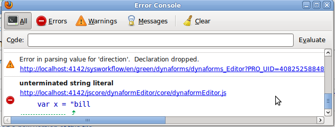

- Overview
- What JavaScript can do
- What JavaScript can't do
- Adding JavaScript to a DynaForm
- Accessing fields with JavaScript
- Field properties
- Accessing a field's value
- Setting values
- Values of dropdown boxes
- Working with Numbers
- Converting Masked Values
- Converting numbers to strings
- Converting Dates
- Accessing checked fields
- Accessing Fields' Styles
- Checkgroups and Radiogroups
- Grids
- Different Types of Fields
- Tying Code to Events
- Importing external JavaScript files
- Debugging JavaScript
- JavaScript Examples
Overview
JavaScript is custom code which runs inside the web browser to customize the behavior of DynaForms. ProcessMaker provides a number of custom functions for controlling elements in DynaForms.
What JavaScript can do
JavaScript is very useful for improving usability and increasing functionality of DynaForms.
JavaScript can used for tasks such as:
- Dynamically hiding and showing fields based on users' actions.
- Changing the text and the style properties of fields.
- Offering help and guiding users with messages and alerts.
- Validating and standardizing the data entered into fields.
- Automatically inserting values into fields.
- Making calculations between fields.
- Managing grid field operations.
- Checking the data and forcing the user to change values before submitting a DynaForm.
- Opening and closing other browser windows.
What JavaScript can't do
JavaScript is only a browser side language. For security reasons, the language is limited to the data available in DynaForms (and in other browser windows). JavaScript is not designed to:
- Access data which is not in the DynaForm or one of the web browser windows.
- Access databases on the server (unless using XMLHttpRequest).
- Execute operations in the server (unless using XMLHttpRequest).
- Execute external programs (unless providing a link to a file which the web browser is configured to open with an external application).
Adding JavaScript to a DynaForm
JavaScript code cannot be added to a ProcessMaker DynaForm unless it is defined inside of a javascript field for that DynaForm. The code is saved inside of the XML definition for the DynaForm. The JavaScript is enclosed inside a character data structure <![CDATA[...]]> so it will not be parsed as normal XML code.
For example:
<dynaForm type="xmlform" name="12565951048b858ca883c57091712352/40681270548d66e46554829029416532"
width="850" enabletemplate="0" mode="edit" nextstepsave="" printdynaform="0">
<ContactTitle type="title">
<en>Enter Contact Details</en>
</ContactTitle>
<ContactName type="text" maxlength="64" validate="Any" size="15" mode="edit">
<en>Contact Name</en>
</ContactName>
<ValidateCode type="javascript" btn_cancel="Cancel">
<![CDATA[function checkEmpty() {
if (getField("ContactName").value == "") {
getField("ContactName").style.borderColor="RED";
return false;
}
else
return true;
}
document.onsubmit = checkEmpty;]]>
</ValidateCode>
</dynaForm>
To add JavaScript code to a DynaForm, first open it in the DynaForm Editor. Click on the JS icon in the toolbar to add a JavaScript object and then define its name and add code:

A DynaForm can have multiple JavaScript objects. To edit the code in one of the JavaScript objects, go to the Javascript tab and select it from the dropdown box in the upper left-hand corner.

After editing the code, it can be checked by simply switching to the Preview tab. The new JavaScript code will immediately execute upon displaying the form in Preview mode (even if the DynaForm has not yet been saved).
Accessing fields with JavaScript
Most fields in a DynaForm are defined with an id of "form[field-name]". To access these fields, either use JavaScript's standard getElementById() function:
or ProcessMaker's custom getField() function:
The getField() function simply encloses the field-name inside "form[" and "]" and then passes that ID to the getElementById() function. For example, to access a textbox named "ContactName", these two ways of accessing the field are equivalent:
getField("ContactName")
Field properties
After referencing the field, then specify which property of the field to access:
To see the list of properties for a particular field, use the var_dump() function inside of an alert():
To find information about each property, see the HTML reference for forms for Mozilla and Internet Explorer, the Document Object Model documentation for Mozilla and Internet Explorer and the JavaScript documentation for Mozilla and Internet Explorer.
Accessing a field's value
Most types of fields store their input in the value property, so their stored text can be referenced as:
For example, to get the contents of a field named "ClientName" and assign it to a JavaScript variable named "client":
Alternatively, the getValueById() function can be used to obtain a field's value:
The value property can be referenced when making comparisons:
...
Setting values
To set the contents of a field, assign to its value property. For example to set "Jane Doe" as the value of the "ClientName" field:
Alternatively, use the changeValue() function:
To clear a field, set its value to an empty string:
Alternatively, use the removeValue() function:
Values of dropdown boxes
The value property of dropdown boxes stores the value (not the label) of the selected option. For listboxes which can have multiple selected options, the value property only contains thevalue of the first selected option. For more information, see Accessing Dropdowns with JavaScript and Accessing Listboxes with JavaScript.
Working with Numbers
All fields store the contents of their value property as a string, which can create problems if needing to do mathematical operations or comparison of numbers. In JavaScript operators such as + (plus sign) and comparison operators such as > (greater than) and < (less than) operate differently depending on whether working with string or numbers.
The + operator adds numbers, but concatenates strings:
| 23.4 + 9.7 | equals 33.1 |
| "23.4" + "9.7" | equals "23.49.7" |
If one of the operands is a string, then + will convert the other operand to a string and concatenate them:
| "23.4" + 9.7 | equals "23.49.7" |
If using the - (subtraction), * (multiplication) and / (division) operators, JavaScript will automatically convert any strings to numbers if possible before executing the mathematical operations.
The comparison operators == (equals to), > (greater than), >= (greater than and equal to), < (less than) and <= (less than and equal to) compare strings differently from numbers:
| 3 > 2 | equals true |
| "3" > "2" | equals true |
| "03" > "2" | equals false |
| " 3" > "2" | equals false |
When comparing strings, JavaScript compares each character in the two strings, one by one until it encounters a two characters which are different. It then converts the characters into their ASCII values in order to compare them, so "0" is less than "2" and " " is less than "2", which is why both "03" > "2" and " 3" > "2" are false.
If one of the operands is a number, then JavaScript will attempt to convert the other to a number before doing the comparison:
| "03" == 3 | equals true |
| " 3" == "3" | equals false |
To avoid these problems, it is recommended to convert field values to numbers before when doing mathematical operations and comparisons. Use the parseInt() function to convert strings to integers and parseFloat() function to convert strings to floating point numbers, which are real numbers which can have decimal points. If the field can accept both integers and floating point numbers, then create a new Number object to convert the string.
For example, if JavaScript is used to add together two fields and insert the sum into a third field:
or:
or:
JavaScript will ignore leading or trailing spaces, when converting strings into numbers, but other characters, such as "," (commas), "$" (dollar signs), "%" (percent signs), can cause the conversion to fail, which results in a NaN (Not-a-Number). To test whether a value is not a valid number, use the isNaN() function. For example:
if (isNaN(f3))
getField("field3").value = 0;
else
getField("field3").value = f3;
Converting Masked Values
Masks for percentage and currency boxes can insert characters which aren't recognized as valid numbers, so it recommended to strip out the non-numeric characters before performing mathematical operations:
The toUnmaskNumber() function can be used to strip out commas and convert a string to a number. The removeCurrencySign() function can be used to remove the "$" (dollar sign) from a string. The removePercentageSign() function can be used remove the "%" (percentage sign) from a string.
To strip out all possible non-numeric characters, it is recommended to use the following stripNonNumeric() function, before calling parseInt(), parseFloat() or Number():
str += ""; //force str to be a string
var rgx = /^\d|\.|-$/;
var out = "";
for (var i = 0; i < str.length; i++) {
if (rgx.test(str.charAt(i))) {
if (!((str.charAt(i) == '.' && out.indexOf('.') != -1) ||
(str.charAt(i) == '-' && out.length != 0 )))
{
out += str.charAt(i);
}
}
}
return out;
}
Converting numbers to strings
All DynaForm fields store their value as a string. A number which is assigned to the value of a DynaForm field will be automatically converted to a string:
To convert a number to a string, use the toString() method:
var str = n.toString()
Alternatively, concatenate an empty string to a number to convert it to a string:
In most cases it is not necessary to explicitly convert numbers to string, since numbers will automatically be converted when concatenated with other strings:
G.alert("The answer is " + num", "Info");
The conversion from numbers to strings depends upon the browser. To ensure proper rounding to a particular number of decimal places on all browsers, use the roundNumber() function to round the number to a specified number of decimal places, then convert the number to a string with a specified number of decimal places with the toFixed() method. For example:
getField("field1").value = roundNumber(num, 2).toFixed(2); //converts to "12.46"
getField("field2").value = roundNumber(num, 4).toFixed(4); //converts to "12.4568"
To round to the nearest whole number use the Math.round() method:
getField("field3").value = Math.round(num); //returns 13
The conversion to a string will use English-style numbers with a "." (dot) as the decimal separator. To use "," (comma) as the decimal separator, first convert the number to a string by concatenating a empty string (+"") to the number, then use the replace() method to replace the dot with a comma:
getField("field1").value = (num + '').replace('.', ',');
Converting Dates
Dates are stored in ProcessMaker as strings, which allows for simple comparisons if they use the default "YYYY-MM-DD" format, but they will have to be converted into Date objects if they use a different mask or need to do any advanced comparisons or mathematical operations. See Accessing Dates with JavaScript.
A Date object will be converted automatically to a string when assigned to the value of a DynaForm field, but if a certain format is needed, then the date should be reformatted using theDate methods. See: Extracting Date Information.
Accessing checked fields
Fields which have a binary option of marked or unmarked, such as checkboxes and options in checkgroups and radiogroups, do not use the value property to store their current state. Instead, use their checked property, which can either be true or false. For example to check whether a checkbox named "ContactClient" has been marked:
...
To mark or unmark a checkbox, set its checked property to true or false:
getField("field-name").checked = false;
Similarly, to mark an option in a checkgroup or radiogroup:
getField("field-name][option-value").checked = false;
Accessing Fields' Styles
The appearance of DynaForm fields can be accessed through the properties of their style object:
For example, to check wither the border color of a textbox named "ClientName" is red:
...
To set the border color to red:
Use the var_dump() function to see a list of properties for a field's style object:
To find information about each style property, see the Cascading Style Sheets documentation for Mozilla and Internet Explorer.
Checkgroups and Radiogroups
Fields which have multiple elements such checkgroups and radiogroups do not have an ID for the entire object. Instead, there are IDs for each option, which are based upon the field name for the checkgroup or radiogroup plus the value of the option (not the label for the option). Options in checkgroups and radiogroups can be accessed as:
or more simply:
Like checkboxes, checkgroups and radiogroups use the checked property to select (mark) an option. For example, to select or deselect the options in a checkgroup named "ContactType" which has options with the values "telephone", "fax" and "email":
document.getField("ContactType][fax").checked = false;
document.getField("ContactType][email").checked = true;
While each option in checkgroups and radiogroups has a different id, all the options in the group have the same name, which allows them to accessed as a group with thegetElementsByName() function. All options in checkgroups have the name "form[field-name][]", while all options in radiogroups have the name "form[field-name]". For more information, see Accessing Checkgroups with JavaScript and Accessing Radiogroups with JavaScript.
Grids
Fields inside grids have IDs which contain the name of the grid, the row number, and the field name--each enclosed in square brackets: form[grid-name][row-number][field-name]. For example, a grid named "Contacts" with three rows of three fields named "FirstName", "LastName", "Address" would have the following elements:
form[Contacts][2][FirstName] form[Contacts][2][LastName] form[Contacts][2][Address]
form[Contacts][3][FirstName] form[Contacts][3][LastName] form[Contacts][3][Address]
To reference a grid field use any of the following three forms:
getField("grid-name][row-number][field-name")
getGridField("grid-name", row-number, "field-name")
For example, to access the "LastName" field in the second row of the "Contacts" grid, use any of the following three forms:
getField("Contacts][2][LastName")
getGridField("Contacts", 2, "LastName")
Similar to the getField() function, the getGridField() function is a wrapper which encloses grid-name, row-number and field-name inside "form[" and "]" and then passes that ID to the getElementById() function.
To obtain the value of this grid field, use any of the following four forms:
var x = getField("Contacts][2][LastName").value;
var x = getGridField("Contacts", 2, "LastName").value;
var x = getGridValueById("Contacts", 2, "LastName");
Different Types of Fields
For more information on accessing different types of DynaForm fields and their properties with JavaScript, see the documentation for:
- Field Labels
- Field Hints
- Validate
- Required
- Read Only
- Masks
- Titles & Subtitles
- Currency boxes
- Percentage boxes
- Dropdown boxes
- Yes/No boxes
- Listboxes
- Checkboxes
- Checkgroups
- Radiogroups
- Hidden Fields
- Dates
- Links
- Files
- Grids
- Button code and labels
- Submit Buttons
Tying Code to Events
By default all JavaScript code is executed the moment the JavaScript object(s) in the XML code are loaded. This means that it will be executed when the DynaForm first appears, which may not be what is desired. For example, code may need be executed when a button is clicked or when the value of a textbox changes.
To make JavaScript code execute in response to particular actions, event handlers will have to be assigned to JavaScript events. An event is an action by the user to a particular field or the entire DynaForm.
An event handler is custom code which is set to execute when an event takes place. The event handler can be a named function or an anonymous function which is defined on the spot. With some types of events, if the event handler returns a value of true, then the default action associated with that event will then take place. However, if the event handler returns a value offalse, then the event will stop and the default action associated with the event will not happen.
Some common JavaScript events include:
- focus: The field receives the focus, meaning that the field is selected to interact with the user. A field can receive focus automatically when a DynaForm is first loaded, or it can receive the focus when a user click on the field is a mouse button or uses the TAB or SHIFT TAB keys to move to the field. If it is a text field, then the cursor will be placed inside the field for editing. If a button, then the button will be highlighted and it can be clicked by simply pressing ENTER.
- blur: The field looses focus.
- click: Any mouse button (which can be the right, left or center button) is clicked over the field, meaning that the button was pressed and released while the mouse cursor is over the field.
- dblclick: Any mouse button (which can be the right, left or center button) is double clicked over the field, meaning that the button was pressed and released twice while the mouse cursor is over the field.
- mousedown: Any mouse button (which can be the right, left or center button) is depressed while the mouse cursor is over the field.
- mouseup: Any mouse button (which can be the right, left or center button) is released while the mouse cursor is over the field.
- mouseover: The mouse cursor moves into a field (its buttons do not have to be clicked).
- mouseout: The mouse cursor moves out of a field (its buttons do not have to be clicked).
- keypress: Any key is depressed and released while a field has focus.
- keydown: Any key is depressed while a field has focus.
- keyup: Any key is released while a field has focus.
- change: The value or selected option(s) of a field changes. This is probably the most commonly used event.
- load: An object is loaded, which happens when a DynaForm is displayed to the user.
- unload: An object is unloaded when the user closes a DynaForm (which can happen when clicking on a submit button or the Next Step link in a DynaForm or by closing or going backward or forward in the web browser window).
Form Events:
- submit: The form is submitted (which happens when the submit button in the DynaForm is clicked), so the DynaForm's data is saved to the database.
- reset: The form is reset (which happens when the reset button is clicked), so the DynaForm fields are reset to their original values.
To assign an event handler to an event, first reference the object where the event will occur and assign a function its event handler. Event handler properties are the name of the event with "on" prepended. For example: "onload", "onchange", and "onkeypress".
When assigning event handlers, either to use a named function:
...
}
getField("field-name").onevent = function-name;
or use an anonymous function which is defined on the spot and has no name:
Example:
A displayClients() function is defined which displays a series of fields. It is assigned as the event handler for the "click" event for the "display" button:
expandSubtitle(getField("clientSection");
visibleById("selectClientType");
return true; //return true to continue any default actions for the click event
}
getField("display").onclick = displayClients;
Note that function references should not include parentheses, because that would cause the function to be executed when assigning the event handler, which would return a value of trueand assign that value as the event handler.
To use a form event, reference the .form property for the field. For example:
if (getField("totalCost").value > 300) {
G.alert("Total Cost is too high. Please reduce it." "Cost Error");
return false; //return false to stop submit action
}
else {
return true; //return true to continue submit action
}
}
Importing external JavaScript files
External JavaScript files can be imported into DynaForms, so that functions and variables defined in an external file can be used in a DynaForm. External JavaScript files allow code to be reused, so that it doesn't have to repeatedly cut and pasted into DynaForms and allows only one version of the code to be maintained over time.
First, create an external file which only contains JavaScript code. Do not include the <script> tag or any other HTML code in the file. Store the file in a publicly accessible location on the internet (or your local network or at localhost).
For example, the code could be placed in the file system of the ProcessMaker server at the location:
- <INSTALL-DIRECTORY>/workflow/public_html/filename.js
Then, the JavaScript file would be available at the URL:
- http://ip-address/filename.js
Make sure that the code file has permissions to be publicly readable. For greater security on a Linux/UNIX server, set the file to only be readable by the apache user and group ("apache:apache" on Red Hat/CentOS/Fedora, "www-data:www-data" on Debian/Ubuntu, "wwwrun:www" on SUSE/OpenSUSE):
chmod 550 filename.js
Then, add code to a DynaForm to import the JavaScript. The code dynamically adds a script element to the head of the document, which should be parsed when the DynaForm is loaded.
var newScript = document.createElement('script');
newScript.type = 'text/javascript';
newScript.src = "<i><strong>url</strong></i>";
document.getElementsByTagName("head")[0].appendChild(newScript);
}
... //call functions and variables defined in the external JavaScript file
For example, if using the following external JavaScript file, stored at /opt/processmaker/workflow/public_html/validate.js on a server with an IP address of 192.168.1.100:
var DueDate = td.getFullYear() + "-" + td.getMonth() + "-" + td.getDate();
function checkDate() {
<font color=green>//"this" references the field which calls the function</font>
if (this.value == "" || this.value <= DueDate) {
this.style.border="1px solid green";
return true;
}
else {
this.style.border="1px solid red";
return false;
}
}
Then, the following code could be inserted in a DynaForm to access the DueDate variable and the checkDate() function, which is defined in validate.js:
var newScript = document.createElement('script');
newScript.type = 'text/javascript';
newScript.src = "http://192.168.1.100/validate.js";
document.getElementsByTagName("head")[0].appendChild(newScript);
//set default date defined in the external JavaScript file
getField("DeliveryDate").value = DueDate;
}
//check if entered date is greater than DueDate with an imported function
getField("DeliveryDate").onchange = checkDate;
Debugging JavaScript
Whenever adding new JavaScript code to a DynaForm, always check to see whether the code generates errors or warnings. A few ProcessMaker functions such as var_dump() will detect whether a variable does not exist and display an alert message box.

In most cases, however, no message box will be automatically displayed. If your browser detects an error in the code, it will simply not execute the code, so it will appear that nothing happened. By default most web browsers are configured to not display error messages, so it won't be obvious that an error has occurred until you check the JavaScript error messages.
Remember that JavaScript is implemented differently in different web browsers, so you will need to test your JavaScript code on every web browser which your organization uses. Internet Explorer tends to not adhere to the standards for ECMAScript, DOM, and CSS and Mozilla Firefox often adds non-standard functions, so it is a good idea to use object/feature detection in your code to ensure that it will be cross-browser compatible.
Note that ProcessMaker only officially supports a few web browsers, so don't be surprised if JavaScript doesn't work correctly on other web browsers.
Examining Variables with Alerts
If unsure of the value of variables in your code, the alert() or G.alert() functions can be used to display the value of about variables either in the Preview tab of the DynaForm Editor or when a DynaForm is displayed while running a case.
To see the value of a variable, insert the code: alert(variable-name);
The var_dump() function can be used to see the elements inside of an object or array: alert(var_dump(object-name));
To see the properties of a DynaForm field, use the getField() or getGridField() functions to obtain its object: alert(var_dump(getField('field-name')));
The alert() function can also be used to see the source code for a function. Use the function name without parentheses inside an alert(): alert(function-name)
Internet Explorer
If Internet Explorer detects an error, a yellow warning icon will be displayed in the status bar. Double-click on the warning icon to open a dialog box; then click on Show Details to see the JavaScript error message.
When debugging code, it is a good idea to adjust Internet Explorer's settings so that the dialog box will always open up when an error occurs. In the menu, go to Tools > Internet Options. In the "Internet Options" dialog box, go to the Advanced tab and check the option Display a notification about every script error.
In general, the error messages for Internet Explorer are not very informative, so it is recommended to debug JavaScript code with Mozilla Firefox.
Mozilla Firefox
By default, Firefox hides JavaScript errors. To see any error or warning messages, go to Tools > Error Console or press CTL+SHIFT+J.

DynaForms currently generate many warning messages when displayed, but these warnings can be safely ignored. To only see the warnings and errors caused by your custom code, view the DynaForm by clicking on the Preview tab in the DynaForm Editor. Then, open the Error Console and clear the warnings by clicking on the "Clear" button. Then, click on theJavaScript tab and then click back on the Preview tab to get the JavaScript to only execute only your custom code (but not reload the DynaForm again).
Firebug
For advanced debugging, install the Firebug extension. Make sure to install the right version of Firebug for your version of Firefox. For example, Firefox 3.5 requires Firebug 1.5. After installing Firebug, right click on the Firebug icon in the right hand corner of the Firefox status bar and select the option Enable All Panels from the menu.

If an error occurs in JavaScript, Firebug will display a message like  in the status bar. Click on it to see the error messages.
in the status bar. Click on it to see the error messages.
The Firebug console is very handy for examining variables and functions. Code can be dynamically executed by entering a line of code in the console and pressing return. To see the value of a variable, enter: variable-name
The var_dump() function can be used to see the elements inside of an object or array: var_dump(object-name)
To see the properties of a DynaForm field, enter the full path to reference from its frame: var_dump(top.oCasesFrame.contentWindow.document.getElementById('form[field-name]'))
To see the parameters to pass to a function enter the function name without parenthesis: function-name
The alert() function can also be used to see the source code for a function: alert(function-name)

Firebug can also be used to discover the structure and elements of a DynaForm. For example, to find the ID or class name of a field in a DynaForm, turn on Firebox by pressing F12 or by clicking on the Firebug icon in the status bar and then pressing CTL+SHIFT+C or by clicking on the "Inspect Element" button in Firebug's toolbar. Then position the mouse over the element in the DynaForm to see its HTML code.

JavaScript Examples
Insert a Value in a Field
Insert a value in a texbox named "myTextField" when the DynaForm loads:
Showing/Hiding Rows when another Field Changes
When a dropdown box named "master" selects the "Show" option with a value of "1", then show a second field named "junior" is shown with the showRowById() function. When the "Hide" option is selected with a value of "0", then the "junior" field is hidden with the hideRowById() function. This code is placed in an anonymous function which is executed with the onchange event for the "master" field.
if (getValueById('master') == 1)
showRowById('junior');
else
hideRowById('junior');
}
getField("master").onchange = hideShowJunior; //execute when "master" changes
hideShowJunior(); //execute when DynaForm loads
Rounding a Number
When the value of the "price" field changes, its value is converted to a floating point number and a 5% tax is added to get the total. That value is then rounded and inserted into the "total field:
var tot = getFloat(getValueById('price'));
getField('total').value = roundNumber(tot + tot * 0.05);
}
getField("price").onchange = evaluateNo;
Enable/Disable Fields when a Checkbox is marked
When the checkbox named "includeShipping" is marked (checked), it enables the fields "shippingCost" and "handlingCost". When not marked (unchecked), these fields are disabled.
if (getField('includeShipping').checked) {
enableById('shippingCost');
enableById('handlingCost');
}
else {
disableById('shippingCost');
disableById('handlingCost');
}
}
getField('includeShipping').onchange = setFields; //execute when the checkbox changes
setFields(); //execute when the DynaForm loads
Loop through a Grid
When the DynaForm loads, loop through a prepopulated grid named "orderGrid" and calculate the "price" times the "quantity" and insert it into the "total" field for each row. Use the Number_Rows_Grid() function to get the number of rows in a grid. Then, pass through that grid using a for loop. Remember that the counting of grid rows starts with 1 (not 0), since the first row contains the labels for each column.
for (var i = 1; i < totalRows; i++) {
getGridField('orderGrid', i, 'total') = getGridField('orderGrid', i, 'price') *
getGridField('orderGrid', i, 'quantity');
}
Adding an Event Handler to New Grid Rows
Just like the previous example, in the "orderGrid", multiple the "price" times the "quantity" and insert it into the "total" field for each row, but have the code execute whenever the value of the "price" or "quantity" fields changes. Empty grids have one blank row when the DynaForm loads, so set a onchange event handler for the "price" and "quantity" fields in the first row of the grid when the DynaForm loads. After that, use the onaddrow() event to set these event handlers each time a new row is added to the grid.
function calcFirstTotal() {
getGridField('orderGrid', 1, 'total') = getGridField('orderGrid', 1, 'price') *
getGridField('orderGrid', 1, 'quantity');
}
getGridField('orderGrid', 1, 'price').onchange = calcFirstTotal;
getGridField('orderGrid', 1, 'quantity').onchange = calcFirstTotal;
//event handlers when new rows are added:
grid_orderGrid.onaddrow = function(iRow) {
getGridField('orderGrid', iRow, 'price').onchange = function(iRow) {
getGridField('orderGrid', iRow, 'total') = getGridField('orderGrid', iRow, 'price') *
getGridField('orderGrid', iRow, 'quantity');
}
getGridField('orderGrid', iRow, 'quantity').onchange = function(iRow) {
getGridField('orderGrid', iRow, 'total') = getGridField('orderGrid', iRow, 'price') *
getGridField('orderGrid', iRow, 'quantity');
}
}
Copying Selected Options in a Listbox to a Dropdown
Make all the selected options in a ListBox named "MyListbox" appear as options in a dropdown box named "MyDropdown".
{
//Save the currently selected option in the dropdown box
var selectedValue = getField('MyDropdown').value;
//Clear all the existing options for the dropdown box
var nOpts = getField('MyDropdown').length;
for (var i = 0; i < nOpts; i++)
getField('MyDropdown').options.remove(i);
//Then add all the selected options from the listbox:
nOpts = getField('MyListbox').length;
var opt = null; //create opt variable so it can be used in the for loop
for (var i = 0; i < nOpts; i++)
{
opt = document.createElement("OPTION");
opt.text = getField('MyListbox').options[i].text;
opt.value = getField('MyListbox').options[i].value;
getField("MyDropdown").options.add(opt);
//if the previously selected option still exists in the new dropdown list, then reselect it
if (opt.value == selectedValue)
getField("MyDropdown").options[i].selected = true;
}
}
//Update the MyDropdown list of options when the DynaForm is first displayed:
updateDropdownList();
//and when the selected options in MyListbox change:
getField("MyListbox").onchange = updateDropdownList;
Displaying Alerts
ProcessMaker's G.alert() function can be used to display a custom alert message with a title. When the value of the "ListPrice" or "Discount" fields changes, then the value of the "SalesPrice" is recalculated. If either the "ListPrice" or "Discount" price is blank, then a warning message is displayed with G.alert():
//since the values are strings, use parseFloat to convert to real numbers
var listPrice = parseFloat(getValueById("ListPrice"));
var discount = parseFloat(getValueById("Discount"));
if (listPrice != 0 && discount != 0)
getField("Total").value = listPrice - discount;
else
G.alert("Please enter values for the List Price and Discount", "Missing Values");
}
getField("ListPrice").onchange = calcSalesPrice;
getField("Discount").onchange = calcSalesPrice;